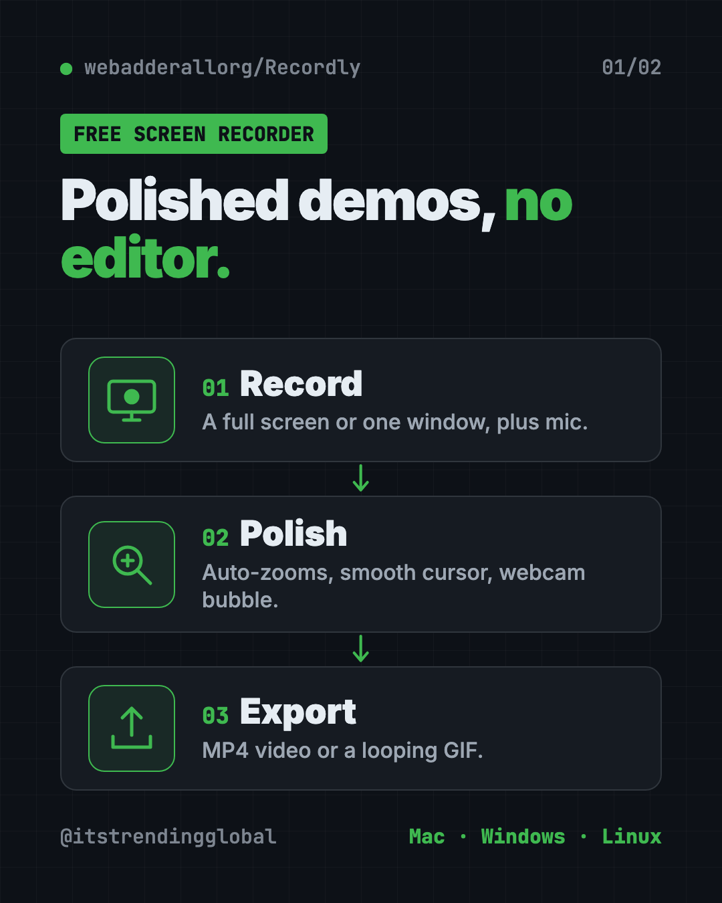
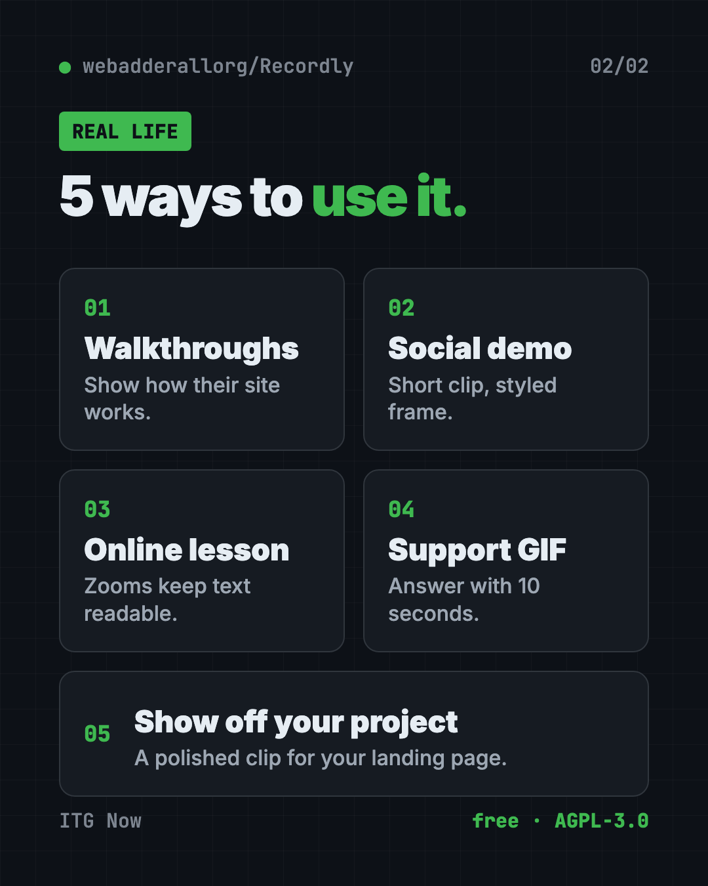

Recordly: Free Screen Recorder With Auto-Zoom (2026)
- Published 15 Oct 2026
- Updated 16 Oct 2026
- 7 min read
- License AGPL-3.0
- By the ITG Now team
Recordly is a free screen recorder and editor that makes your demos look polished without hours of editing. It adds automatic zooms, a smooth cursor, a webcam bubble and a pretty background, then exports an MP4 or GIF.
You record your screen to show how something works. Then you watch it back. The cursor jumps around, the text is tiny, and nobody knows where to look. This guide shows how Recordly fixes that, with real examples and simple install steps.
Key takeaways
- Free and open source under the AGPL-3.0 license.
- Record and edit in one app. Auto-zooms, cursor polish, webcam overlay, trims and speed changes.
- Mac, Windows and Linux. Mac needs macOS 14 Sonoma or newer.
- Exports MP4 and GIF, with size and quality controls.
- Popular: about 33.9K GitHub stars.
What is Recordly?
Recordly is a desktop app for recording your screen and then dressing the video up. The README (the project's main instructions page) calls it an "open-source screen recorder and editor for walkthroughs, demos, product videos, and more."
Its pitch is simple. Instead of sending raw footage to a motion designer just to add zooms and cursor polish, Recordly "handles that workflow in one place for free."
Open source means anyone can read the code that runs it. Recordly first started as a copy (a "fork") of another project, OpenScreen. The README says over 80% of the code has changed since.

What can Recordly do?
Here are the main features from the README, in plain words:
- Auto-zooms. Recordly suggests zooms based on where your cursor moves, so viewers see the important part up close.
- Cursor polish. Smooth out shaky cursor movement, make it bigger, add a little bounce on clicks, or a motion blur.
- Webcam bubble. Put your face in a round bubble in the corner. It can even shrink and grow with the zooms.
- Styled frames. Place your video on a wallpaper, color or gradient, with rounded corners, padding and shadows.
- Timeline editing. Drag and drop to trim, speed up boring parts, slow down key moments and add text or images.
- Audio. Record your mic and your computer's sound, and add extra audio clips later.
- Extensions. A community marketplace adds things like click sounds, device frames and browser mockups.
Your work saves as a .recordly project file, so you can come back and change it later.
How to use Recordly (real examples)
- Show a client how to use their new website. Record the walkthrough, let auto-zoom highlight each button, add your webcam bubble, and send an MP4.
- Make a product demo for social media. Choose an aspect ratio preset that fits the platform, add a gradient background, and speed up the slow loading screens.
- Teach a class online. Record a lesson in Google Sheets or Canva. Zooms make small text readable on a phone.
- Answer a support question with a GIF. Record ten seconds, export a looping GIF, and paste it into the help ticket.
- Show off your side project. A polished 30-second clip with a styled frame looks great on a landing page.
💡 Tip: Move your mouse slowly and pause on the things you click. Recordly's zoom suggestions follow cursor activity, so calm movements give cleaner zooms.

Is Recordly really free?
Yes. Recordly is free and open source under the AGPL-3.0 license. The README doesn't mention any paid plan, watermark or trial.
AGPL-3.0 means you can use and change it freely. If you share a changed version, or run it as an online service, you must share your code too. For normal use, recording your own videos, that doesn't affect you.
How to install Recordly on Mac, Windows and Linux
First, check your computer meets the minimum:
| Computer | Needs |
|---|---|
| Mac | macOS 14.0 Sonoma or newer |
| Windows | Windows 10, version 20H1 (Build 19041) or newer |
| Linux | Any modern version; system audio usually needs PipeWire |
The easy way: go to the Recordly releases page, download the file for your computer, and install it like any other app.
On Arch or Manjaro Linux, you can install it from the AUR (a community app store for Arch). Copy and paste this:
yay -S recordly-bin
Record your first video
These are the README's steps:
- Open Recordly.
- Pick a screen or a single window.
- Choose your mic and system-audio options.
- Start recording.
- Stop recording. The editor opens on its own.
In the editor, add zooms, trims and a background. Then export as MP4 or GIF.
⚠️ Heads up: On Linux, Recordly can't hide your real cursor yet. If you also turn on its polished cursor, you may see two cursors in the video. On old Windows builds (before 19041), the real cursor may show too.
If your Mac says "App cannot be opened"
This mostly happens if you built the app yourself. The README's fix is to copy and paste this in Terminal:
xattr -rd com.apple.quarantine /Applications/Recordly.app
Build it yourself (optional)
Only needed if you want the latest code. You need Node.js and your system's build tools. Copy and paste this:
git clone https://github.com/webadderallorg/Recordly.git recordly
cd recordly
npm install
npm run dev
Let Claude or Codex set it up for you
Claude Code and OpenAI Codex are AI helpers that can run setup steps on your computer. You paste a request, it explains each step, and you approve it.
Copy and paste this:
Please help me install Recordly, the free screen recorder from github.com/webadderallorg/Recordly.
1. Check my operating system and version, and confirm it meets Recordly's minimum.
2. Find the right download for my computer on the releases page.
3. Install it, and explain each step before you run it.
4. Walk me through the screen recording and microphone permissions.
Then try asking:
Recordly on my Mac says "App cannot be opened." Help me fix it safely.
Give me a 60-second script for a product demo I'll record in Recordly.
I'm on Linux. Check if I have PipeWire so Recordly can record system audio.
Recordly at a glance
| Price | Free |
| Works offline | Yes, records and edits on your computer |
| Platforms | Mac (macOS 14+), Windows 10 (Build 19041+), Linux |
| License | AGPL-3.0 (open source) |
| Exports | MP4 and GIF |
| GitHub stars | About 33.9K |
| Best for | Tutorials, product demos and quick how-to clips |
Who should use Recordly?
- Creators making tutorials for YouTube, TikTok or Instagram.
- Marketers and founders who need clean product demos fast.
- Teachers recording lessons and walkthroughs.
- Support teams who answer questions with short videos or GIFs.
- Freelancers showing clients how to use what they built.
Our take
Recordly gives you the "fancy screen recording" look for free. Auto-zooms and a smooth cursor do most of the work that used to take an editor.
What we like:
- Free and open source, with no watermark mentioned.
- Recording and editing in one app.
- Thoughtful extras: webcam bubble, styled frames, GIF export.
- Saves projects so you can edit later.
- Honest README that lists its limits.
What to watch for:
- Linux can't hide the real cursor yet.
- Mac needs macOS 14 or newer.
- System audio on Linux usually needs PipeWire.
- It's a young project, so expect frequent changes.
Want to edit further? Try OpenCut, the free open-source CapCut alternative, or OpenReel, a free video editor in your browser. For full AI video projects, see OpenMontage.
FAQ
Is Recordly a free screen recorder?
Yes. Recordly is free and open source under AGPL-3.0. The README lists no paid plan or trial.
Does Recordly add a watermark?
The README doesn't mention any watermark. It exports regular MP4 and GIF files.
Does Recordly work on Windows?
Yes. It needs Windows 10 version 20H1 (Build 19041) or newer for the best results, including a hidden real cursor.
Can Recordly record my webcam too?
Yes. You can add webcam footage as a bubble overlay, move it, mirror it and round its corners.
Can I record system audio with Recordly?
Yes, on most setups. Mac needs macOS 14 or newer, Windows has native support, and Linux usually needs PipeWire.
Can I export a GIF with Recordly?
Yes. Recordly exports GIFs with settings for frame rate, looping and size, as well as MP4 video.
Get Recordly: github.com/webadderallorg/Recordly
Keep reading

Folia: Free Animated Lyrics Music Player
Folia is a free animated lyrics music player that shows full-screen moving lyrics for your local music, Navidrome and more. What it does and how to start.

net-merge: Combine Wi-Fi and Phone Internet, Free
net-merge is a free app to use two internet connections at once, like Wi-Fi plus a phone hotspot, on Windows, Mac and Linux. No account or VPN.

ArtCraft: Free AI Video and Image Studio
ArtCraft is a free AI video and image studio. Build your scene in 2D or 3D first, then let an AI model make the image or video. Mac and Windows.